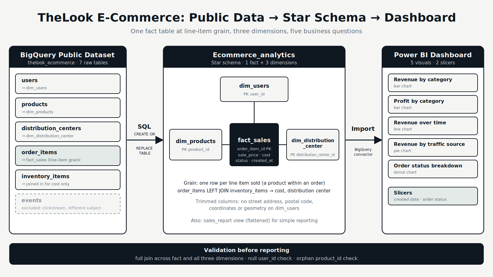
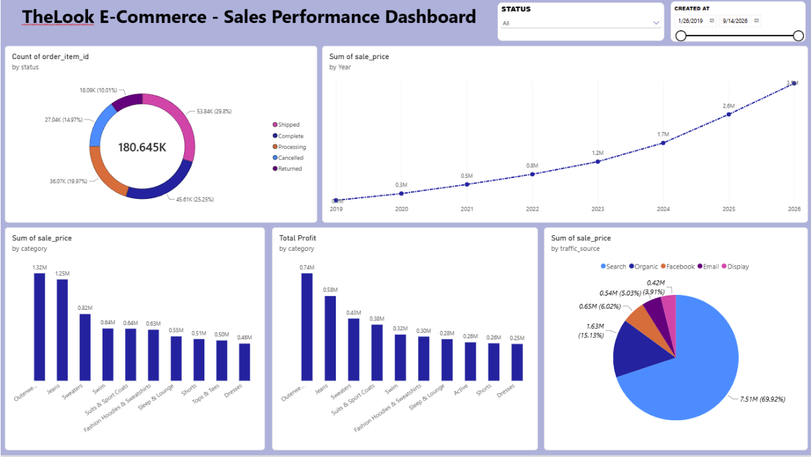
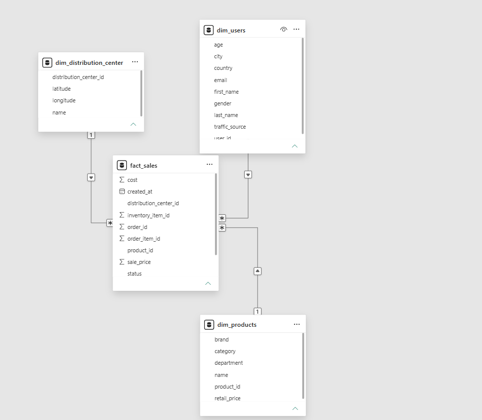
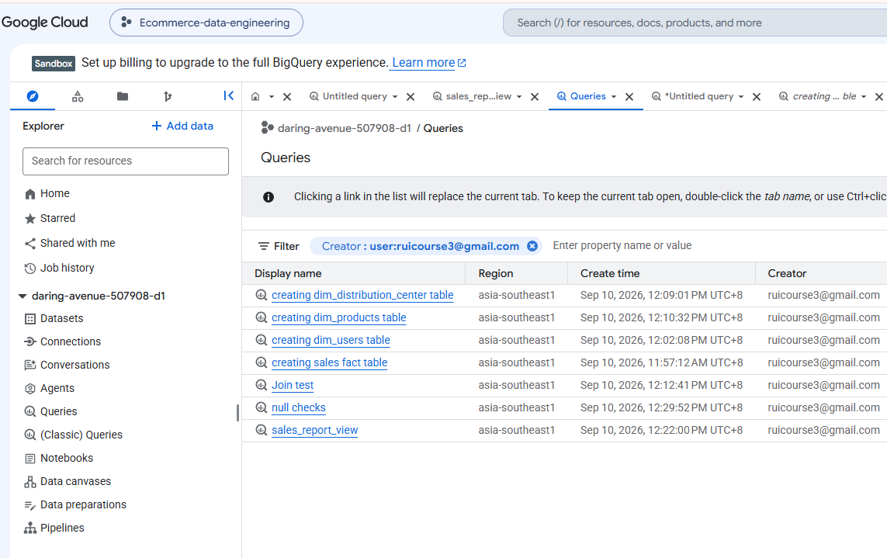
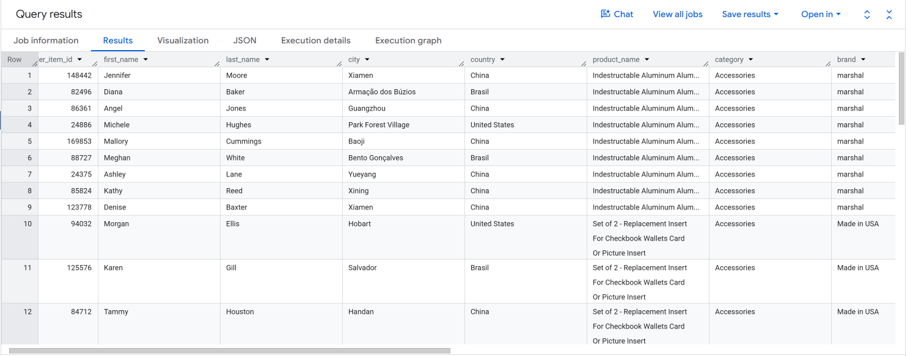

Overview
A public BigQuery dataset transformed into a star schema, then turned into a dashboard that answers real sales questions.
The project takes Google's thelook_ecommerce dataset, a simulated clothing e-commerce business, and models it into one fact table and three dimensions. A Power BI dashboard built on those tables practices dimensional modeling, data cleaning, grain reasoning, and BI development.
Problem & goals
The source is seven raw tables hosted on BigQuery: users, products, orders, order_items, inventory_items, distribution_centers, and events. They are related only through shared ID columns, so nothing is ready for analysis as it stands.
- Choose the right grain. Decide what one row of the fact table represents, so sales can be analyzed by individual product.
- Model only what supports the questions. Trim each dimension to relevant fields and exclude tables with a different subject area.
- Prove the model works. Validate the joins and orphan keys before building any dashboard on top.
Approach
Step one: Explore & define the grain
Each raw table's schema was reviewed in BigQuery. The fact table was based on
order_itemswith one row per line item sold, since collapsing to the order level would have made product-level analysis impossible.Step two: Model dimensions and the fact
users,products, anddistribution_centersbecame dimensions, trimmed to the relevant fields.inventory_itemswas joined in only to bring unitcostinto the fact table, andeventswas excluded as a separate subject area.Step three: Build & validate
Each table was created with
CREATE OR REPLACE TABLEfrom the public dataset. A full join across the fact and all three dimensions, plus null and orphan checks, confirmed every sale resolved to a user, product, and warehouse.Step four: Report
A flattened
sales_reportview was created for simple reporting. The Power BI dashboard connects to the BigQuery fact and dimension tables instead, to preserve the star schema relationships, with slicers for created date and order status.
Architecture
The model has one fact table, fact_sales, with the grain of one line item sold. It links to dim_users, dim_products, and dim_distribution_center. The fact table joins order_items to inventory_items to pull in cost and the distribution center ID. The dashboard answers five questions: revenue by category, profit by category, revenue over time, revenue by traffic source, and order status breakdown.

Choosing line items rather than orders as the grain is what makes product-level revenue and profit analysis possible.
Code sample
The fact table build: it joins each order item to its inventory item to pick up the unit cost and the distribution center it shipped from.
create or replace table Ecommerce_analytics.fact_sales as select oi.id as order_item_id, oi.order_id, oi.user_id, oi.product_id, oi.inventory_item_id, ii.product_distribution_center_id as distribution_center_id, oi.status, oi.created_at, oi.sale_price, ii.cost from `bigquery-public-data.thelook_ecommerce.order_items` oi left join `bigquery-public-data.thelook_ecommerce.inventory_items` ii on oi.inventory_item_id = ii.id;
Gallery




What I learned
The most important decision came before any SQL: choosing the grain. Deciding what not to model mattered just as much. inventory_items was folded into the fact table for its cost, and events was set aside because clickstream data is a different subject area and a candidate for a separate star schema on web behavior. Trimming columns such as street address and coordinates kept the model focused and limited PII exposure. Validating the joins before touching Power BI meant the dashboard sat on a model I had already checked.